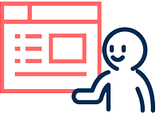

조선일보의 뉴스 컨텐츠를 제공하는 조선닷컴 사이트의 리뉴얼 프로젝트로, 조선미디어 계열사의 다양한 콘텐츠를 모아보는 '콘텐츠판' 기능과 사용자 개인화 설정 기능을 도입하여 사용자의 편의성을 증대하기 위해 노력하였으며, 특집 라이브 방송 서비스등 신규 서비스를 도입하여 다양한 볼거리를 제공하였습니다.
Project Features

User Freindly UX·UI가독성을 높이기 위해 넓이, 간격, 폰트 사이즈에 강약을 조정하고, 모바일과 PC에 최대한 동일한 사용자 경험을 제공
개인화 설정 기능 도입메뉴바와 콘텐츠판에 사용자 직접 설정 기능을 도입하고, 이전에 본 뉴스를 모아 보여주는 ‘내가 본 뉴스’ 서비스 도입
뉴스홈·콘텐츠판 신설기사만을 제공하는 뉴스홈과 조선미디어 계열사의 콘텐츠를 제공하는 콘텐츠판을 신설하여 독자의 선별적 콘텐츠 소비를 도움